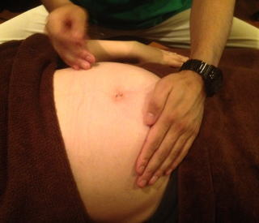
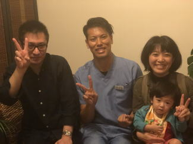
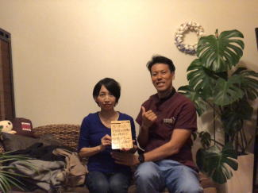
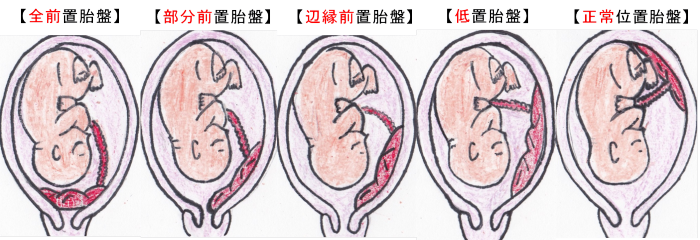
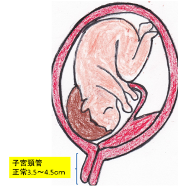
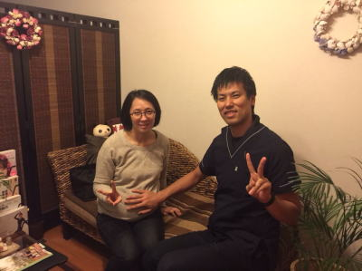
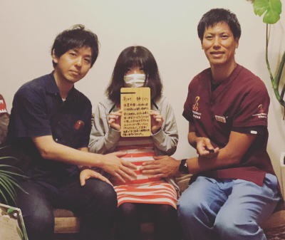

前置胎盤、低置胎盤は安静にしていて上がるものではありません。鍼灸施術により体質を変えると変化してきます。
電話でのご予約・お問い合わせはTEL.03-6413-7803
〒154-0014 東京都世田谷区新町3-21-1さくらウェルガーデン301号室
前置胎盤・低置胎盤PLACENTA PREVIA treatment
前置胎盤・低置胎盤 専門鍼灸院！！

治癒率72％の実績！！現在785名の患者様の胎盤が完治しております。
【疫学】
アジア人女性は白人・黒人女性と比べると前置胎盤の罹患率が高く、特に日本人女性の場合、前置胎盤の発症率が1.39～2.15倍ほど罹患率が高くなると言われています。
【前置胎盤とは】
前置胎盤とは、胎盤の正常な位置は
子宮底（子宮の上側）に近い位置になるのが通常なのに対して、前置胎盤は子宮口（子宮の下側）にかかったり覆ってしまったりする状態のことを言います。
発生頻度としては全分娩の0.3～0.5％と言われていて、きわめて珍しい分娩になります。また、前置胎盤は次回の出産時に4～8％が再発すると言われています。
しかし、こちらの出産は早産や大量出血の危険があるため母子ともに命に係わるハイリスクな出産となります。
一般的に病院では施術する方法がないため、
『安静にしておけば治るでしょう』と言われてしまいます！！
しかし、原因はお母さんの体の色々な部分にあります。
お母さんの体の状態が良くないと前置胎盤になりやすいため、体の不調を一つ一つ消していく必要があります。
前置胎盤と診断されたら、なるべく早い段階から施術をすることにより胎盤の位置が上がりやすくなります。
また、前置胎盤は症状がないため、出血があった時や過度の浮腫みがある時は注意が必要となるために病院への緊急受診が必要となることがあります。
また、これらの症状は妊娠28週以降にみつかる事が多くなると言われています。
前置胎盤が変わらない場合は帝王切開をすれば良いとお医者さんは言いますが、実際帝王切開をすると、その後のお母さんの体に大きな影響を及ぶす事になります。
帝王切開は体の中を流れる『気』の流れを遮断してしまうため、その後の手術痕が原因で『様々な病気』を併発してしまう事が多いのです。
また、赤ちゃんも正常分娩の方が、元気で病気に罹りにくい子になります。
その他にも、出産予定日までお母さんの『栄養』や『気』のエネルギーをしっかりと赤ちゃんがもらえると、頭が良く、怒りにくい子になりやすくなります。
また、予定日前に帝王切開でむりやり出すと、今話題のキレやすい子などの発達障害のリスクを上げてしまうとも言われています。
赤ちゃんが出てくる前にお母さんのお腹の中で『良い子』にしてあげましょう。
子供の教育はお腹の中から始まっているのです。
帝王切開の選択をする前に鍼灸で体質改善を行って体の状態を整えましょう。
前置胎盤、全前置胎盤、部分（一部）前置胎盤、辺縁部前置胎盤、低置胎盤が見つかったのなら早い段階でご連絡下さい。
お腹が大きくなると共に胎盤の位置が変化するためです。
胎盤は妊娠週数が早ければ早いほど正常位置まで上がる可能性が高くなります。
経腟分娩をするには子宮口から2ｃｍ離れる必要があります。
通常は子宮口から5ｃｍ以上離れています。
前置胎盤の原因は西洋医学ではわかっていませんが、当院の研究では原因を特定しております。
また、鍼がどうしても恐い患者様には刺さない鍼を用いての施術も行っております。
刺さない鍼はツボ押し棒で押されているような感覚のものです。
前置胎盤でお困りの方は一度ご来院下さい。諦める前に無料相談を！！


【胎盤の完成する時期はどれくらい？】
妊娠15～20週頃に完成すると言われています。
胎盤に異常がわかった段階から、なるべく早く鍼灸施術をすることにより胎盤が正常位置まで上がってきます。1日でも早くが大切です。
病院によって『前置胎盤疑い』とわかる時期は異なりますが、早い方だと15～20週で、遅い方だと31～34週で見つかる方もいます。
『前置胎盤』と確定診断がつくのは31～34週になります。それ以前の週数では胎盤が動く可能性があるので『前置胎盤疑い』となります。
繰り返しになりますが、1日でも早い周期で施術することが前置胎盤には重要です。
【前置胎盤の種類】

・全前置胎盤 ：胎盤が子宮口を全部覆っている状態
・部分前置胎盤：胎盤が子宮口を一部を覆っている状態
・辺縁前置胎盤：胎盤が子宮口から0ｃｍの状態
・低置胎盤 ：胎盤が子宮口から2ｃｍ以内の状態
・正常位置胎盤：胎盤が子宮口から5ｃｍ以上離れている状態
正常な出産である経腟分娩ができる範囲として病院によって様々です。
3ｃｍ、5ｃｍと病院によって基準の位置が異なるようですが、
おおむね子宮口から2ｃｍ離れていれば病院を選べば経腟分娩ができると思います。
【前置胎盤になりやすい方の特徴】
１、喫煙歴のある妊婦さん
喫煙歴のある方とない方では7倍も前置胎盤に罹りやすくなると言われています。
妊娠希望の方は妊娠する1年前位から禁煙に努めることをおススメいたします。
２、高齢出産の妊婦さん
35歳未満の方と比べると35歳以上の方は5倍、40歳以上の方は9倍、
前置胎盤のリスクが上がるとされています。
３、以前の出産で前置胎盤を経験している妊婦さん
前置胎盤の経験がある患者様は次の妊娠でも前置胎盤になるリスクが8倍高くなるとされていますが、鍼灸施術により体質が改善した患者様は例外となります。
４、帝王切開の経験がある妊婦さん
帝王切開の回数が多いほど前置胎盤になりやすく、子宮筋と胎盤との癒着の可能性も高くなります。つまり１人目の時の出産時に帝王切開をしていると、次の妊娠の時に前置癒着胎盤になりやすくなります。
癒着があると最悪の場合、子宮を全摘することもあります。
５、子宮内膜に傷がある場合
中絶や流産、子宮内膜症、子宮筋腫摘出術などの経験がある方は内膜に傷がついてしまっていることがあるため、正常な位置に着床しなくなっています。
そのため、前置胎盤になりやすくなってしまいます。
【胎盤の位置によるリスク】
胎盤の位置には前壁付着と後壁付着があります。
前壁付着の場合、大量出血が3.3倍、胎盤の癒着2.6倍、子宮全摘3.5倍となるため、前壁に胎盤が付着している場合は前置胎盤の中でも更にリスクが高くなるとされています。
【子宮頸管の長さについて】
子宮頸管の長さも前置胎盤の患者様では大変重要になります。
切迫早産との関係が高くなるため子宮頸管の長さが重要です。
病院で前置胎盤と言われたら必ず検診のたびに頸管の長さを確認して下さい。 子宮の頸管の長さは平均3.5～4.5ｃｍと言われており、長い人だと7ｃｍもあると言われています。
4.0ｃｍ以上あれば比較的安心できる長さと言われております。
36週以前に3ｃｍ以下になっていると切迫早産の可能性が高まるため入院を勧められることが多くなります。
このため、出産予定日の半年以上前から、本人は凄く元気なのに入院しないといけなくなってしまうこともあります。
そうすると、1人目のお子さんを誰かに預けないといけないとか、病室のベットからほとんど動けない状態で半年後の出産に備えることになります。
元気な人が病院に半年も入院して、ほとんどベットから動いてはダメと言われます。これは想像を絶する大変さなのです。
当院の経験からすると、病室で寝たきりの状態でほとんど動かないと胎盤が動く可能性は極めて低くなるように感じます。
また、24週以前で頸管の長さが2.5ｃｍ以下の方は早産になるリスクが6倍高くなると言われてます。
36週以降は臨月となるため胎盤の位置に問題がなければ頸管の長さを気にすることはないでしょう。

【前置胎盤で注意が必要なこと】
１、鮮血の出血には注意
予告出血、警告出血といって少ない出血がちょこちょこ出る場合があります。
その後、大量出血に移行することがあるので、少しでも妊娠中に出血した場合は必ず病院にご相談下さい。
特に予告出血（警告出血）の場合でも鮮血の場合は特にご注意下さい。
２、お腹の張りが安静にしても引かない
お腹の張りがなかなか引かない場合は切迫早産（子宮が開き赤ちゃんが出てきそうな状態、破水してしまった状態）になりやすくなるので注意が必要です。
お腹が張る時はなるべく運動量を控えて安静にして下さい。
通常だと数時間もお腹が張ることはないでしょう。
３、急に足のむくみがでた場合
こちらも切迫早産になりやすくなってしまいますので注意が必要です。
朝起きたら急に足がむくんでいる。朝は平気だったが午後になったら極度に脚が浮腫むなどの場合は注意が必要です。
【自己血輸血について】
前置胎盤の場合800～1,200ｍｌの自己血輸血を2週間に1度の割合で、1度に400ｍｌの採血を2～3回行い、帝王切開の1週間前までに完了させる必要があります。
採血の時期は病院によって異なり20週目以降から始める所が多いでしょう。
そのため、病院で前置胎盤疑いと言われたらなるべく早く鉄分の摂取を心がける必要があります。鉄分量が少ないと適切な量の血液が取れなくなってしまうため、緊急に備えて適切量の貯蔵ができなくなります。
貯蔵血液が十分にない手術の場合、血液量が足らなくなってしまい出血性ショックを起こしお母さんが死んでしまう場合もあります。
『貧血』も鍼灸施術の対象となりますので来院時に詳しくお話させて頂きます。
【前置胎盤の方の寝る向きについて】
前置胎盤、低置胎盤だからといって寝る向きは特にどの姿勢でも大丈夫です。
しかし、お腹が大きくなるにつれて仰向けが辛くなる方がいますが、そのような場合には寝やすい方向を向いて寝て下さい。
逆子のように寝る姿勢で胎盤が動くということはないですし、寝る姿勢によって悪影響を及ぼすこともありません。
朝起きた時に腰が痛いなどの症状があるようでしたら、寝具に問題があるので寝具を変える必要はあると思います。
【前置胎盤の癒着について】
前置癒着胎盤は胎盤の一部が子宮筋や膀胱に入り込んでしまっていてるものです。通常の分娩では、胎児出産後に胎盤が自然に剥がれ落ちます。
しかし、癒着胎盤の場合は子宮筋と胎盤が癒着しているため自然に剥がれることができません。
そのため、大量出血に移行してまう危険な病気です。
前置胎盤の患者さんの5～10％に癒着を伴っている方がいます。
また、帝王切開の既往率が多い方ほど、癒着の合併が増加すると言われています。
癒着胎盤になってしまうと胎盤が動くことはまずなく、次の妊娠をしたくても、子宮を全摘することになってしまうため、前置癒着胎盤は大変恐いものとなっております。
しかし、鍼灸施術によって前置癒着胎盤の原因を取り除くことによって癒着を緩める体質に変えることも可能です。癒着するには原因があるのです。
| 帝王切開の回数 | 胎盤癒着の確立 |
| 0回 | 3％ |
| 1回 | 11％ |
| 2回 | 39％ |
| 3回以上 | 60％ |
【前置胎盤の出産時期】
前置胎盤が予定日までに上がらない場合は37週目以降に帝王切開になります。
平均の分娩週数は34～35週と言われています。
それは突然、早産になる危険性があるためです。
また、37週での帝王切開が周産期死亡率のリスクを避けるとされています。
通常の分娩週数は37週0日〜41週6日（正期産）になります。
予定日より早い段階での計画出産をすると、赤ちゃんに発達障害、呼吸器トラブル、心臓奇形、体温調節機能、免疫機能が低下しやすくなってしまいます。
胎盤の状態が良くないと予定日より出産が早まることがあるので、なるべく1日でも早くに鍼灸施術を行う必要があります。
前置胎盤の診断を受けたら一刻も早く鍼灸施術を開始することによって胎盤の位置が上がってきますので早めの鍼灸施術をおススメいたします。
▶無料相談はこちらへ
【患者様の喜びの声】
1、辺縁部前置胎盤 37歳 M,M様 第2子
『鍼灸施術回数1回』
19週でこちらの鍼灸院に来院しました。
病院の検診にて辺縁部前置胎盤と言われ、子宮口に3ｃｍ被っている状態であると説明を受けました。このままだと今の病院ではハイリスク出産のため産むことが出来ないそうです。
１人目もそこの産婦人科で出産して看護婦さんやドクターも親切で良かったので、またこちらの産院で産みたいとの気持ちが強かったのでどうにか前置胎盤を変えたいとの思いで色々調べてこちらの鍼灸院にたどり着きました。
初回の来院時に体質などを調べて頂き生活指導と食事指導を受けてこちらの鍼灸の先生にも施術回数は最低12回はかかると言われ、来週に控えている沖縄旅行も止めるように言われてしまいました。
帰宅後、長男に話すと沖縄でジンベイザメが見られると期待していたため息子がかなり落ち込んでしまいました。
自分や家族を納得させるため、鍼灸施術を1回しか受けていないけどもう一度、病院で診察をしてもらって変化がなかったら沖縄旅行は取りやめにしようとの気持ちで病院に伺ってみると胎盤が全く問題なくなっていたのです。
1回だけしか鍼灸をしていないのに胎盤が正常位置まで上がっていました。鍼灸院に来院してからたった5日後に病院に行ってのことだったので病院の先生もかなり驚かれていました！！
おかげで息子と沖縄旅行に行くことができました。本当にありがとうございました 。
産後もお世話になりたいと思っておりますのでどうぞよろしくお願いします。

2、全前置胎盤 41歳 Y，M様 第2子
『鍼灸施術回数7回』
妊娠12週目に病院で全前置胎盤と診断され、
中期になれば子宮が大きくなり位置が上がるかもということ、もし上がらなければ帝王切開になるということを知らされました。
帝王切開と聞いて怖くなり病院を出た直後にネットで調べこちらの鍼灸院に辿り着きました。
妊娠初期で通えたのはラッキーとこちらの院長先生に言われホッとした気持ちと、もしこのまま前置胎盤が上がらなかったらという不安の気持ちでいっぱいでしたがその後、妊娠20週目の検診で全前置胎盤は全く問題なく心配ないですよとのこと！鍼灸院通院7回目で通常分娩が可能になりました。
前置胎盤とともに体質も改善できるので一石二鳥です。
風邪の時に治療してもらったり、持病のアトピー性皮膚炎の施術もしてもらっています。
院長先生は体のことがとても詳しく頼もしいので産後も通いたいと思います。
前置胎盤で悩まれている方々に鍼灸施術が広まればと願っています。

3、低置胎盤 37歳 高村静様 第1子
『鍼灸施術回数2回』
妊娠32週目の健診にて1.3cmの低置胎盤と診断され、あれよあれよといううちに週数が進んでしまい、病院側に勝手に予定帝王切開の流れのスケジュールを組まれてしまいました。
夫婦共々、立ち会い出産を強く希望していた為、勝手に帝王切開を組まれてしまったショックの状況を飲み込む事が出来ず何とか方法はないかと思いインターネットを調べ上げ、こちらのTeaching Beautyさんの門を叩きました。
1回目の施術は、私自身の身体の特徴を見ていただき鍼灸施術を行っていただきました。
家では、先生からアドバイスを受けた様々なことを毎日実施したところ、1回目の施術後に、『この時期に医師も絶対に伸びる事がないであろう』と言っていた胎盤が2.23cmに伸び２回目の施術後には、3.51cm迄に胎盤が伸びその時点で低置胎盤という診断が消え予定帝王切開のスケジュールが取り下げとなりました。
こちらの門を叩いてから僅か1週間の出来事でした。
低置胎盤診断を受けた時に絶望的になりながらもこちらにお電話して本当に良かったと思っております。 先生、心よりありがとうございました。

▶さらに口コミを見る
【当院での施術方法】
現在当院では、前置胎盤を改善する独自で開発した鍼灸施術と温熱施術により胎盤にアプローチいたします。
前置胎盤と診断されたら早い段階から当院で施術を始める事によって胎盤が動いていきます。また、1日でも早期の施術開始が重要になります。
世界的に見ても前置胎盤の施術を行っている施術所は少ないのが現状です。
そのため、飛行機や新幹線で通院されている患者様もいる程です。
お困りのようでしたら一度ご相談下さい。
遠方から通院を考えている方は東京に最低6日間は宿泊してもらい、朝と晩で施術を行っていきます。
施術回数は8~12回程を目安としております。
前置胎盤・低置胎盤でお悩みのようでしたら、まずは電話やﾒｰﾙにて無料相談をご利用下さい。
帝王切開での平均額は入院費込みで55万円となっております。
また、出血をして半年間の入院した場合は入院費1日1万円としてもおよそ180万円必要になります。
しかし、お金以上にお腹を切りたくない、命の危険が恐いなどという方はご相談ください。
▶無料相談はこちら
現在当院では、前置胎盤を改善する独自で開発した鍼灸施術と温熱施術により胎盤にアプローチいたします。
前置胎盤と診断されたら早い段階から当院で施術を始める事によって胎盤が動いていきます。また、1日でも早期の施術開始が重要になります。
世界的に見ても前置胎盤の施術を行っている施術所は少ないのが現状です。
そのため、飛行機や新幹線で通院されている患者様もいる程です。
お困りのようでしたら一度ご相談下さい。
遠方から通院を考えている方は東京に最低6日間は宿泊してもらい、朝と晩で施術を行っていきます。
施術回数は8~12回程を目安としております。
前置胎盤・低置胎盤でお悩みのようでしたら、まずは電話やﾒｰﾙにて無料相談をご利用下さい。
帝王切開での平均額は入院費込みで55万円となっております。
また、出血をして半年間の入院した場合は入院費1日1万円としてもおよそ180万円必要になります。
しかし、お金以上にお腹を切りたくない、命の危険が恐いなどという方はご相談ください。
▶無料相談はこちら
前置胎盤・低置胎盤 施術料金
前置胎盤の施術を専門に行っている治療院は世界でも限られます。
| １回 | \49,500(税込) |
|---|---|
▼無料相談、ご予約はこちらから▼
📞03-6413-7803
Ｔｅａｃｈｉｎｇ Ｂｅａｕｔｙ

〒154-0014
東京都世田谷区新町3-21-1
さくらウェルガーデン3F
TEL：
03-6413-7803
→アクセス
診療時間
通常診療
月火金土／9:00～13:00
木曜日 ／15:00～19:00
※当日予約可。
夜間診療
月火木金土／19:00～23:00
※通常価格の1.5倍料金
※当日の19時までにご予約の場合のみ
深夜・早朝診療
月火木金土／23:00～翌9:00
※通常価格の2倍料金
※当日の19時までにご予約の場合のみ
休診日
水、木（午前）、日、祭日
交通事故・労災・
各種保険取扱い